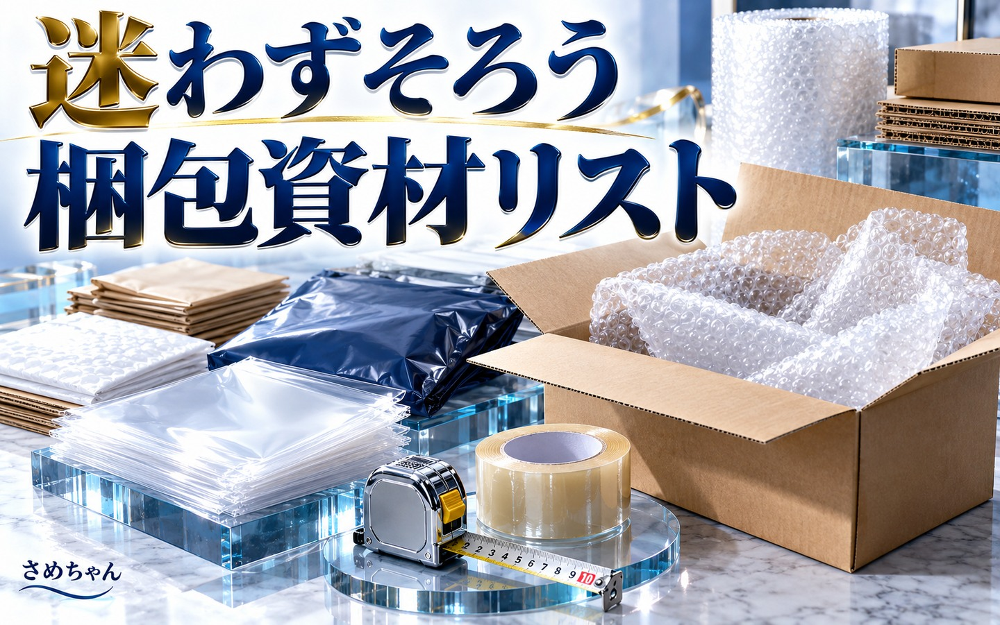

START HERE
まずは、梱包してから測りましょう。
商品を守る
袋・緩衝材・箱を含めて準備。送料を下げるために保護を減らさず、必要な資材を使いましょう。
出っ張りも測る
いちばん外側の縦・横・厚さと重さを測ります。膨らんだ部分やテープも含めます。
条件を比べる
安さだけでなく、匿名・追跡・発送場所を確認。専用資材は実際の収まりも確認します。
SHIPPING FINDER
荷物の情報を入力
四角い荷物を想定しています。円筒・不定形は、最も出っ張る部分を含む四角い外寸で入力してください。
入力例から試す
商品名は例です。実際の梱包後の数値に入れ直してください。
入力はこの画面内で計算されます。氏名や住所の入力は不要です。
候補がここに表示されます。
左の項目に入力すると、比較対象の中から送料＋必須の専用資材代が安い順に表示します。
スマートフォンでは入力欄の下に結果が出ます。
CHOOSING YOUR ROUTE
迷ったときの、発送フロー
最後に「匿名」「追跡」「発送場所」を見て決定。サイズの境目では、梱包後にもう一度測ると送料の見込み違いを減らせます。
使う前に、ここだけ確認
匿名にしたいときは、出品時からメルカリ便に
購入される前に、配送方法を「らくらくメルカリ便」または「ゆうゆうメルカリ便」に設定しておきましょう。購入後の変更では匿名にならない場合があります。画面の配送設定も確認してください。
表示金額に含まれるもの・含まれないもの
持ち込み時の送料と、必須の専用資材代を比較しています。袋・箱・緩衝材を買い足す費用、印刷代、交通費、集荷料金は含みません。手持ちの適切な梱包資材を使う場合、追加購入は不要です。専用資材は新品購入の代表価格です。ポスト用シールは郵便局の20枚100円を1枚5円として計算し、実際の購入時はセット代がかかります。ゆうパケットポストは送料215円＋シール5円＝1件220円が目安です。専用箱を買わず、手持ちの封筒などに発送用シールを貼って送れます。
mini封筒は20円、コンパクトBOXは70円、ゆうパケットプラス箱は65円で計算。販売場所により価格・在庫は異なります。
全ての配送サービスの最安値ではありません
メルカリ便の主要8方式と、クリックポスト・定形郵便・定形外郵便を比較しています。地域や内容品などで条件が変わる方法、レターパック、スマートレター、ゆうメール、エコメルカリ便、梱包・発送たのメル便などは自動比較の対象外です。
大きな家具や候補が出ない荷物は、公式の配送方法一覧で条件を確認しましょう。商品や地域によっては、対象外の方法が安くなる場合もあります。
サイズが合っても、内容品の確認は必要です
電池・スプレー・香水などは、内容品により配送条件が異なります。壊れやすい品や高価な品は補償の範囲も確認しましょう。発送前に、各候補の公式ページから内容品・梱包条件を確認してください。
料金・条件の確認日：2026年11月9日。料金は自動更新ではありません。最終的な送料・受付可否は配送会社の計測・判断で確定します。
必要な資材を確認する：迷わずそろう梱包資材リスト →YOUR NEXT STEP
出品から発送まで、
自分に合う流れをつくろう。
使える時間や資金に合わせた進め方は、ロードマップ作成の個別相談で一緒に整理できます。
このLINEで個別相談の案内を見る ↗